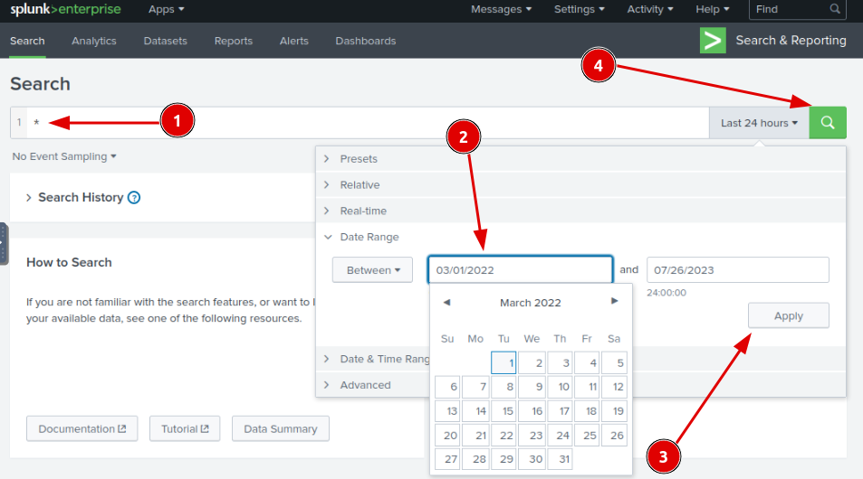

Scenario Notes:
• A host from the HR department has been identified as potentially compromised based on suspicious process execution alerts from the IDS.• Further investigation using network information-gathering tools and scheduled tasks revealed activities that confirmed the suspicion of a compromised host within the HR department.
• The investigation was constrained by limited resources, leading to the extraction of process execution logs with Event ID 4688, which were ingested into Splunk for analysis.
• The network is divided into three segments - IT Department, HR Department, and Marketing Department. Understanding this segmentation could help in narrowing down the scope of the investigation and identifying potential attack vectors.
Objective:
Identify the root cause of a network connectivity issue for a specific workstation in the IT department.Question 1:
How many logs are ingested from the month of March, 2022?Explanation:
Answer:
13959Question 2:
Imposter Alert: There seems to be an imposter account observed in the logs, what is the name of that user?Explanation:
By querying the database for the top 20 "Username" entries, it becomes evident that further investigation of the account named "Amel1a" is warranted. Intriguingly, the creator chose to name it "Amel1a" while there is another account with the name "Amelia." This coincidence raises interesting points for consideration.Answer:
Amel1aQuestion 3:
Which user from the HR department was observed to be running scheduled tasks?Explanation:
On this next query we will ask for every user that is in the HR department and ran a process named schtasks.exeThere were 18 events but after a bit of scrolling this event was the only one that run a scheduled task, the other ones are updatesAnswer:
Chris.fortQuestion 4:
Which user from the HR department executed a system process (LOLBIN) to download a payload from a file-sharing host.Explanation:
Let's apply the same query logic as the last question but now let's run the command "stats", in Splunk, it counts occurrences of each unique value in the "CommandLine" field and then display the results.Let's further investigate the first result as It appears that the command uses "certutil.exe" to download a file from a specific URL ("https://controlc.com/548ab556") and save it as "benign.exe" in the local directory. Meaning this command can be used to download a file from the Internet and store it on your computer.Now we will change the format a bit because just in this print we have the answer for 6 questions and the answers are self-explanatoryAnswer:
haroonQuestion 5:
To bypass the security controls, which system process (lolbin) was used to download a payload from the internet?Answer:
certutil.exeQuestion 6:
What was the date that this binary was executed by the infected host? format (YYYY-MM-DD)Answer:
2022-03-04Question 7:
Which third-party site was accessed to download the malicious payload?Answer:
controlc.comQuestion 8:
What is the name of the file that was saved on the host machine from the C2 server during the post-exploitation phase?Answer:
benign.exeQuestion 9:
The suspicious file downloaded from the C2 server contained malicious content with the pattern THM{..........}; what is that pattern?Explanation:
To see the content from where the malicious content was downloaded, we have to go into the website itselfAnswer:
C:\\Users\\Finance01\\AppData\\Roaming\\EasyCalc\\EasyCalc.exeQuestion 10:
What is the URL that the infected host is connected to?Answer:
hxxps://controlc.com/548ab556Conclusion:
In this investigation, suspicious activities on a compromised host in the HR department were analyzed. Limited resources necessitated focusing on Event ID 4688 logs in Splunk. The investigation revealed an imposter account, scheduled tasks run by a user named "Chris.fort," execution of LOLBIN "certutil.exe" to download a payload from controlc.com, and other related details. The date, filename, content pattern, and URL associated with the malicious payload was also identified, aiding in understanding the nature of the compromise.1. A total of 13,959 logs were ingested from March 2022, providing a comprehensive dataset for analysis.
2. An imposter account named "Amel1a" was observed in the logs, raising concerns about potential unauthorized access.
3. The user "Chris.fort" from the HR department was observed running scheduled tasks, warranting further investigation into their activities.
4. The user "haroon" from the HR department executed the system process "certutil.exe" to download a payload from the URL "https://controlc.com/548ab556," saving it as "benign.exe" in the local directory. This allowed the attacker to bypass security controls and initiate the download of a malicious payload.
5. To bypass security controls, the attacker used the system process "certutil.exe" to download the payload from the internet.
6. The execution date of the malicious binary was on March 4, 2022.
7. The third-party site "controlc.com" was accessed to download the malicious payload.
8. The file saved on the host machine from the C2 server during the the post-exploitation phase was named "benign.exe."
9. The malicious content in the downloaded file had the pattern "THM{..........}," indicating the presence of a threat or malware.
10. The URL that the infected host connected to was "hxxps://controlc.com/548ab556," confirming the source of the malicious payload.